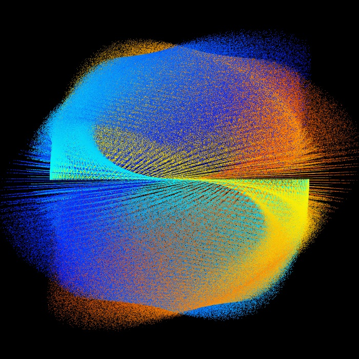

A little about me...
I'm Mavis and stuff, 22 years old, runaway American, majoring in media design. I was interested in doing this course because I really like doing coded art and am very interested in the tec art scean. I thought that learning more about wed design would give me a new medium to explore those interests in and I definetly feel that it did! I'm way more confident coding in html and css as well as more confident teaching myself how to do this stuff. If you click on the side bar you can take a look at an interactive composition I made to get the gist of the other stuff I do.
M C
O L
R I
E C
- K
S -
T H
U E
F R
F E
This is an example of one of the projects I put together with the creative coding stuff I do. I hope to expand what I can do in this area through web design.
Flex Box Assignment
15/3/20-22/3/20 (I had to re-do it later)
Overall the flex box assignment worked out ok in the sense that I did improve my understanding of how it all worked but I had some tecnical problems that are not yet fully rectified... I was able to complete the tutorial and get my website to look like the wireframes but when it came to pushing my work to github I ran into some problems. I thought I had followed the instructions correctly to create my own branch but when I went to try and push my work I saw I was in the master branch not the branch I had thought I had created. I couldn't find my branch so I went to make a new one. I ended up with another copy of the code that was in the master branch in a new seperate branch but then I couldn't push anything to github because I kept getting the message that I didn't have permission. I also realized when I got home that in the process of creating a new branch I had acidentally deleted my work and now only had the code that was in the master branch and I still couldn't push anything to github. So the long and the short of it is I did sucsessfully use flex boxes and get the page to configure differently at different sizes but I've lost my work and will now have to re do it. yay!
So I've re-done the flex box assignment and everything went well. It was much easier seeing as I've already done it once before. It definetly felt like good review for using the width controlls.
GitHub As A Collabarative Tool
8/3/20
There are a few basic aspects of Github that make it a very valuable tool for coding projects, particularly collaborative ones. In short you have a log of old versions of you’re code so you can go back to past work if you make a mistake and you can create a fork or branch of existing code so that multiple people can work on the same project at once without messing with anyone elses work. You can also see other peoples branches so as to keep up with what other members of your group are doing.
On Off Switches Javascript Intro
29/3/20
I have the code up and running to change between images with on and off switches but I'm confused on how to link to an external javascript file using the buttons. I'm also a bit confused on weather or not I should be loading my images in the javascript file or html. The pictures I'm using for on and off are below.
I had a crack at this again today and only managed to confuse myself more! I thought what I was trying to do with the seperate js file wasn't working because I was doing something wrong in Javascript but now I can't get my css document to work either and I have no idea what's wrong! This is so weird...
Grid Tutorial
24/3/20
I found makeing the basic grid wireframes was pretty doable over all I thought the tutorial was pretty fun. I just messed around looking at the avalible examples and trying different things until I figured it out. I think this tequnice will definetly come in handy.
Dark Mode
I was having a really hard time figuring out linking up a seperate javascript file before this tutorial as you can probably tell from my entry about the on off switch assignment but this tutorial helped me out a lot. I went over the video explaining the tutorial while looking at the code and it all made a lot more sense.
This Very Blog
8/3/20-NOW
I started off with a very different concept for this blog as you will see from my original wireframes. When I first came up with these wireframes I wasn't really sure how I was going to go about it as I was much less comfortable in html and css and I think that's the issue with wireframes and with my original set up for the blog. I also had pretty much no experience wireframing or prototyping a website. I had built a version of the blog where all of my entries were on seperate pages and I hated it so much.
I know that the set up I have for the blog right now is pretty goofy and probably not the most intuitive thing but the whole reason I took this course was to see what fun different things I can do in this medium and I've really had fun putting together this blog. I also think that so much stuff on the internet is formatted in such similar ways it's kind of boring. I don't see a reason why everything has to follow these same basic patterns so I wanted to make something different that might be more fun and interesting to look at. My eventual goal is to be able to code things that people really feel like they can explore and hopefully what I've lerned in this class will further that goal. I know I could have put everything on seperate pages etc. Like I did with my original version but when I strted doing this I was just having way to much fun and I've decided to say screw it because I really like this.